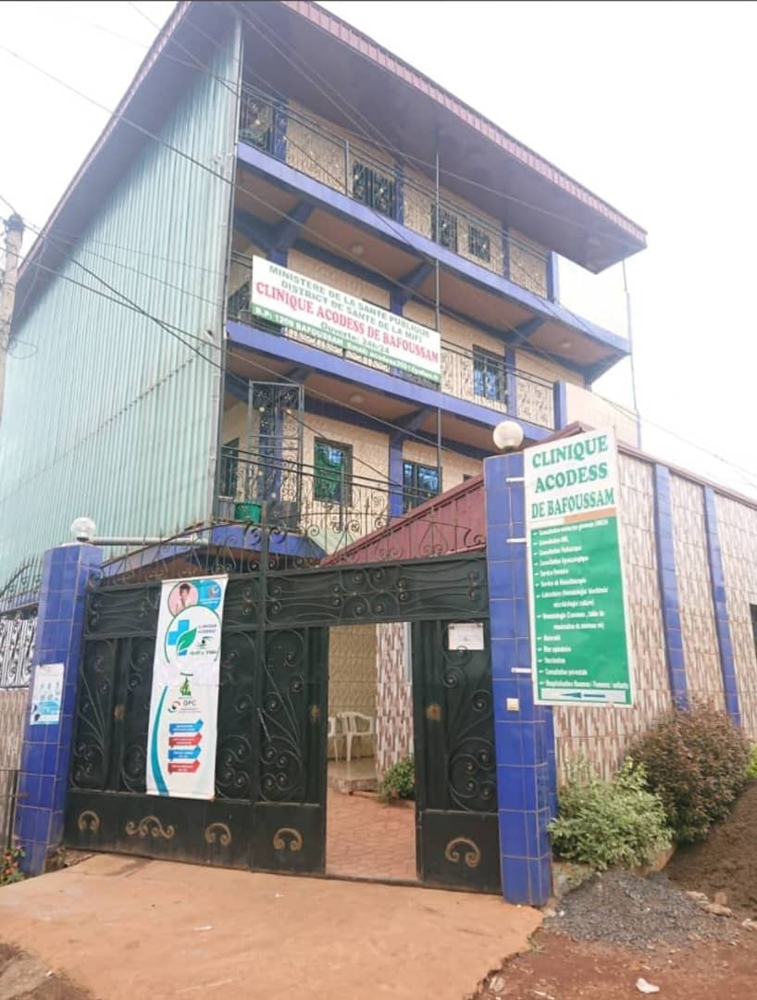

Découvrez l'histoire, les valeurs, la structure et les acteurs qui font la force du Département de Génie Informatique de l'ENSET d'Ebolowa.
Un message sincère sur la vision, les ambitions et l'engagement du département envers l'excellence numérique africaine.

Chers étudiants, chers partenaires, bienvenue au Département de Génie Informatique de l'ENSET d'Ebolowa. Notre département incarne un engagement profond envers l'excellence technique et la formation de cadres compétents, capables de répondre aux défis numériques de notre époque.
Depuis 2017, nous œuvrons à doter nos étudiants non seulement de compétences techniques de haut niveau, mais aussi de la rigueur intellectuelle et de l'éthique professionnelle nécessaires pour transformer notre société. L'informatique industrielle, les systèmes embarqués, le développement logiciel, l'intelligence artificielle : autant de domaines dans lesquels nos diplômés s'illustrent avec fierté sur le marché de l'emploi camerounais et africain.
Nous croyons fermement que la technologie est le levier central du développement du continent. C'est pourquoi nous formons des ingénieurs ancrés dans les réalités africaines, capables de concevoir des solutions adaptées aux contraintes locales : connectivité limitée, énergie variable, ressources matérielles réduites — autant de défis qui forgent des esprits créatifs et résilients.
Je vous invite à explorer nos programmes, à rejoindre notre communauté d'apprenants et à bâtir avec nous l'avenir technologique du Cameroun.
Un parcours marqué par l'excellence, l'innovation et le dévouement à la formation technique depuis la création du département.
Fondation officielle du département au sein de l'ENSET d'Ebolowa, avec pour mission de former des techniciens supérieurs et des ingénieurs maîtrisant les technologies informatiques industrielles et fondamentales adaptées aux réalités du Sud-Cameroun.
Lancement officiel de la filière BTS Informatique, première promotion de 80 étudiants. Mise en place des premiers laboratoires de TP réseaux, développement logiciel et systèmes embarqués.
La première cohorte de diplômés BTS et Licence Professionnelle quitte le département avec un taux d'insertion professionnelle remarquable, confirmant la pertinence de la formation face aux besoins du marché camerounais et de la sous-région.
Rénovation complète des laboratoires : systèmes embarqués (Arduino, Raspberry Pi, FPGA), réseaux industriels, robotique et intelligence artificielle. Acquisition d'équipements SCADA pour les formations industrielles avancées.
Ouverture du Master Recherche en Informatique, positionnant le département comme centre de formation avancée et de recherche appliquée au niveau régional. Thématiques phares : IA, IoT, systèmes distribués et robotique.
Avec plus de 400 étudiants actifs répartis sur 6 filières, 28 enseignants-chercheurs et plus de 400 projets académiques réalisés, le département s'affirme comme une référence régionale en formation technique et innovation numérique.
Les valeurs et principes qui guident notre mission de formation technique et professionnelle d'excellence.
Former des techniciens et ingénieurs hautement qualifiés en génie informatique, maîtrisant les fondements théoriques et les applications pratiques, capables d'innover et de répondre aux défis technologiques du Cameroun et de l'Afrique.
Devenir le département de référence en Afrique centrale pour la formation en génie informatique industriel, reconnu pour la qualité de ses diplômés, la pertinence de ses programmes et l'impact de sa recherche appliquée.
Excellence technique, rigueur académique, innovation pédagogique, intégrité professionnelle et engagement citoyen guident chacune de nos décisions et orientent la formation de nos étudiants.
Nous exigeons le meilleur de nos étudiants et de notre corps enseignant, avec des programmes conçus pour atteindre les standards internationaux de la formation en informatique.
Nous intégrons les technologies les plus récentes dans nos cursus : IA, IoT, systèmes embarqués, cybersécurité — pour former des profils adaptés à l'industrie 4.0.
L'éthique professionnelle et l'honnêteté intellectuelle sont des piliers de notre formation. Nous préparons des ingénieurs responsables et dignes de confiance.
Nous formons des ingénieurs ancrés dans les réalités africaines, capables de concevoir des solutions adaptées aux contraintes locales : connectivité, énergie, ressources.
Une équipe dirigeante expérimentée et dévouée à l'excellence de la formation en génie informatique.
Des voix authentiques qui illustrent l'impact de notre formation sur les parcours professionnels de nos diplômés.
Le département m'a donné les bases solides pour intégrer une entreprise de développement logiciel à Yaoundé dès ma sortie. Les projets pratiques en dernière année font vraiment la différence.
L'orientation vers les systèmes industriels et les automates m'a permis de décrocher un poste dans une usine de traitement de l'eau. Une formation rare et très demandée au Cameroun.
Le Master m'a préparé à la recherche. Mon mémoire sur l'IA appliquée aux réseaux industriels a été présenté dans une conférence internationale. Je suis aujourd'hui doctorant.
La formation DIPET m'a ouvert des portes vers l'enseignement technique. Les enseignants sont pédagogues, disponibles et passionnés par leur discipline. Une expérience enrichissante.
Les hackathons organisés par le département sont d'excellentes expériences. J'ai décroché mon premier contrat grâce à un prototype réalisé durant l'un d'eux. L'environnement est très stimulant.
Les laboratoires bien équipés nous permettent de travailler sur des cas réels. Travailler sur des microcontrôleurs et des systèmes SCADA dès la première année est une chance énorme.
Tout ce que vous devez savoir sur le Département de Génie Informatique de l'ENSET d'Ebolowa.